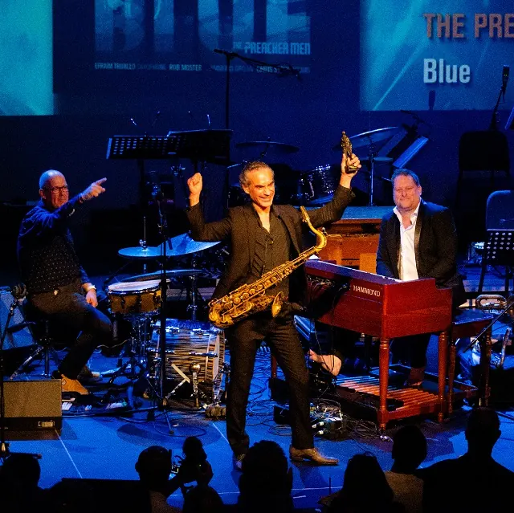

Nieuws ·
Easter Jazz op Tweede Paasdag in Nijmegen Oost

Dit bericht uit ons archief verscheen op 29 maart 2023 op NieuwsNijmegen.nl. Data, tijden en prijzen kunnen inmiddels anders zijn.
Op maandag 10 april, Tweede Paasdag, gaan we weer “jazzen” in Nijmegen-Oost! In zes cafés is er tussen 14.00 uur tot laat in de avond live muziek te horen. Op het programma staan onder andere Edison-winnaar the Preacher Men (met Efrajim Trujillo), The Jazz Republic Sessions featuring Benjamin Herman en de kersverse Sublime Award winnaars Organix. Ook diverse acts uit Nijmegen en omstreken zijn te beluisteren. Het is wederom een gevarieerde mix van allerlei jazz en aan jazz verwante muziekstijlen.
Passe-partouts kosten 10 euro en zijn aan de deur te koop. Tickets zijn ook te krijgen in de voorverkoop: https://shop.ikbenaanwezig.nl/…/easter-jazz-10-04-2023
Uitgebreid programma:
Café ’t Haantje
15.30-17.15 Oostenwind
De ongebruikelijke bezetting van maar liefst 4 saxofonisten plus ritmesectie geeft Oostenwind een onmiskenbaar eigen geluid. De composities, voornamelijk uit de hand van tenorsaxofonist Maurice Smit zijn op de verschillende solisten geschreven met als resultaat een zeer eigenzinnig repertoire. De leden van Oostenwind putten hun inspiratie uit de jazz en fusion maar verwerken in hun arrangementen allerlei elementen uit o.a. de hiphop, de pop en de wereldmuziek.
19.00-20.00 Big Charles Brass Band
Brass, jazz en funk. Dat is de Big Charles Brassband. Een 11-koppige band uit ons eigen Nijmegen. Een frisse band met jongemannen die elkaar kennen uit de studenten-bigbands die Nederland rijk is. Met 3 trompetten, 2 trombones, 2 saxen, 1 ritmesectie en 1 megafoon trekken ze langs diverse festivals en podia. Geïnspireerd door o.a. Preservation Hall Jazzband, Rebirth Brassband, Lucky Chops en Youngblood Brassband, brengen ze een mix van traditionele en moderne brass. Oude stijl straatmuziek in een nieuw jasje. Knallende rifs, swingende solo’s en catchy standards: alles komt voorbij. Zowel in de cafés, als op straat! Eén ding is zeker: stilstaan is geen optie!
20.30-22.15 PEBB
Oorspronkelijk was het de bedoeling van de 7 Nijmeegse muzikanten die PEBB vormen een New Orleans funkbandje te beginnen. Door de brede muzikale belangstelling van de diverse bandleden waaierde het repertoire al gauw uit richting diverse andere muziekstijlen. Al vele jaren brengen zij een gevarieerd repertoire van funk, soul en jazz op vele grote en kleine podia. Met Easter Jazz 2023 pakt PEBB deze keer uit met een vette funknummers in de stijl van Maceo Parker, Fred Wesley, the JB’s. Uiteraard afgewisseld met oude bekende nummers uit het repertoire!
Proeflokaal Beij Ons
14.00-15.45 Anita Petruesco Trio
Anita Petruescu Trio bestaat uit drie veelzijdige muzikanten, met sterke artistieke intenties, gebonden en gedreven door een verlangen naar vrijheid. Hun muziek is een ritueel van introspectie en verkenning, een band met het heden gezien door de lenzen van het verleden, met lyrische melodieën, opwindende harmonie, samenspel en ruimte voor avontuur.
21.30-23.15 Jazz Republic sessions featuring Benjamin Herman
Richie Reichgelt nodigt de virtuoze saxofonist Benjamin Herman uit, om samen met Nederlandse topmuzikanten Matthijs Geerts, Thomas Pol en Yorán Vroom een groovy set neer te zetten.
Proeflokaal de Brouwtoren
14.30-15.30 Big Charles Brass Band
Brass, jazz en funk. Dat is de Big Charles Brassband. Een 11-koppige band uit ons eigen Nijmegen. Een frisse band met jongemannen die elkaar kennen uit de studenten-bigbands die Nederland rijk is. Met 3 trompetten, 2 trombones, 2 saxen, 1 ritmesectie en 1 megafoon trekken ze langs diverse festivals en podia. Geïnspireerd door o.a. Preservation Hall Jazzband, Rebirth Brassband, Lucky Chops en Youngblood Brassband, brengen ze een mix van traditionele en moderne brass. Oude stijl straatmuziek in een nieuw jasje. Knallende rifs, swingende solo’s en catchy standards: alles komt voorbij. Zowel in de cafés, als op straat! Eén ding is zeker: stilstaan is geen optie!
16.30-18.15 The Preacher Man
The Preacher Men (Efrajim Trujillo, Rob Mosterd, Chris Strik) neemt je mee naar de tijd van rokerige bluesclubs in de zuidelijke staten. Ze zijn bijeen om je te bekeren tot hun soulvolle & funky muziek! Dus, kom op lieve geliefde broeders en zusters, en sluit je aan bij de diensten van vandaag. Amen!
Winnaars van de Edison Publieksprijs 2019
19.30-21.15 Organix
Organix is een nieuwe en frisse band rondom Hammond organist en zanger Piero Bianculli (Altamura, Italië 1978) die met zijn energieke en intens muzikale performance al jaren diverse podia en clubs onveilig maakt. Bij deze band is voor het eerst dat hij kiest voor zijn eigen, spannende jazzy en funky werk. De band wordt versterkt door Thijmen Molema (drums), Xander Vrienten (bas) en Filip Schrijver (gitaar). Doorspekt van twee decennia ervaring maken deze vrienden nu de stap om een eigen album uit te brengen waar vooral de instrumenten shinen.
Winnaars van de Dutch Jazz Award van Sublime 2023
Café de Kroon
15.00-17.00 The Crown Connection
The Crown Connection is de naam van de sessieband welke sinds 2014 iedere 1e zondag van de maand bij Café De Kroon de jazz jamsessie organiseert. Bij opening en sluiting van de jamsessie speelt de band graag nummers van zowel oude jazz legendes als hedendaagse jazz artiesten. Speciaal voor Easter Jazz brengen zij daarvan een groot aantal nummers ten gehore. Werk van legendes zoals Lee Morgan, Hank Mobley en Benny Golson komen voorbij, maar ook hedendaags werk van Omer Avital, Roy Hargrove, Tom Harrell en Eric Vloeimans wordt gespeeld. Voor deze gelegenheid wordt de sessieband uitgebreid met een gast trompettist.
17.30-18.30 Big Charles Brass Band
Brass, jazz en funk. Dat is de Big Charles Brassband. Een 11-koppige band uit ons eigen Nijmegen. Een frisse band met jongemannen die elkaar kennen uit de studenten-bigbands die Nederland rijk is. Met 3 trompetten, 2 trombones, 2 saxen, 1 ritmesectie en 1 megafoon trekken ze langs diverse festivals en podia. Geïnspireerd door o.a. Preservation Hall Jazzband, Rebirth Brassband, Lucky Chops en Youngblood Brassband, brengen ze een mix van traditionele en moderne brass. Oude stijl straatmuziek in een nieuw jasje. Knallende rifs, swingende solo’s en catchy standards: alles komt voorbij. Zowel in de cafés, als op straat! Eén ding is zeker: stilstaan is geen optie!
19.30-21.15 TOINE
“Een multitalent met soul, durf en veel passie”, aldus saxofoniste Candy Dulfer over singer-songwriter. TOINE (Den Haag, 1988). Wie TOINE al langer volgt, herkent dit meteen. Zijn concerten bruisen van de energie, emotie en toewijding aan de muziek. Hoewel TOINE’s songs duidelijk aan de popkant grenzen, groeit hij op met funk, blues, jazz en soul. En dat kleurenpalet hoor je altijd terug in TOINE’s muziek. Daarnaast worden de nummers geïnjecteerd met diepe grooves.
Glaswerk
15.00 – 17.00 Pierre et les Optimistes
Pierre et les Optimistes spelen zoete liedjes, swingende deuntjes, zonnige vibes en zomerse grooves! Hun persoonlijke visie op globale muziek is geïnspireerd door Classic Jazz en Jazz Manouche, Frans chansons, Flamenco en Caribische muziek, en al het andere dat hun aandacht zou kunnen trekken. Of het nu gaat om originele liedjes of klassiekers aller tijden, ze streven ernaar om vreugde met de wereld te delen.
21.00-22.45 Celebrity Hottub Party
Stap in een bruisend bad van hete jazz dat zelfs de coolste kat zal opwarmen. CHTP is een vierkoppige tijdmachine die je meeneemt naar de jaren 30/40. In de traditionele bezetting van contrabas, drums, accordeon en gitaar vermaken de heren van CHTP je met toegankelijke, dansbare muziek van over de hele wereld.
Café Jos
15.00-16.45 Taste of Ruby
Het repertoire van het trio Taste of Ruby wordt gekozen op gevoel en bevat nummers van o.a. Madeleine Peyroux, Melody Gardot, Lhasa de Sela en David Bowie. Voorop staan: liefde voor de muziek, plezier en kwaliteit. En dat brengen zij graag over op hun publiek. De drie muzikanten vormen een hecht muzikaal trio dat een jazzy repertoire speelt van jazz- standaards, smooth-jazz en pop-songs.
18.00-19.45 Mulder!
Vers en nieuw is het kwartet van saxofonist René Mulder. Mulder ! is een Nijmeegs – Brabantse combi. De bandleden kennen we van Travel Syndicate, Quatro Ventos, de Lip, @rchestra, LEF, Pieter Bast E.S.P. Quintet, Paul van Kemenade Quintet. Saxofonist René Mulder is terug op z’n geboortegrond, Nijmegen–Oost. Jazz zoals het moet zijn, repertoire van bekende saxofonisten afgewisseld met eigen nummers.